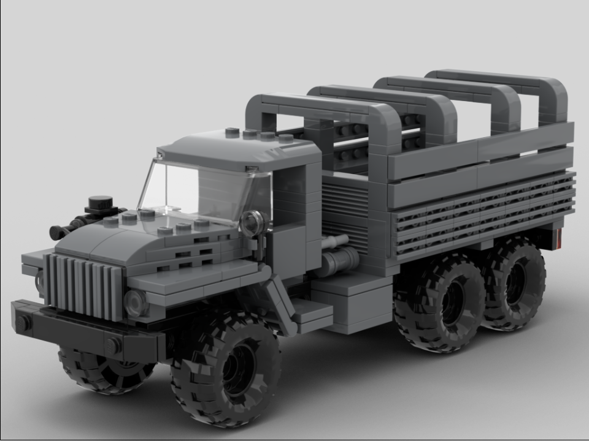

The Ural 4320 is a general purpose truck in service since 1976, and is still being produced to this day. It is most commonly seen in a 6x6 configuration, but exists in a 4x4 configuration as the Ural 43206. There are many, many variants, ranging from armored troop carriers to civilian commercial trucks. Its chassis is also used for the BM-21, a multiple rocket launcher system reminiscent of the WWII Katyusha rocket launcher.
This model features two opening side doors, an opening rear gate, a spare wheel in between the bed and the cab, and 6 rolling wheels (wow!). In addition to the instructions for an open-air model, there are instructions for a simple “wire frame” over the bed designed to hold up a fabric cover.
"Wire frame" Version
